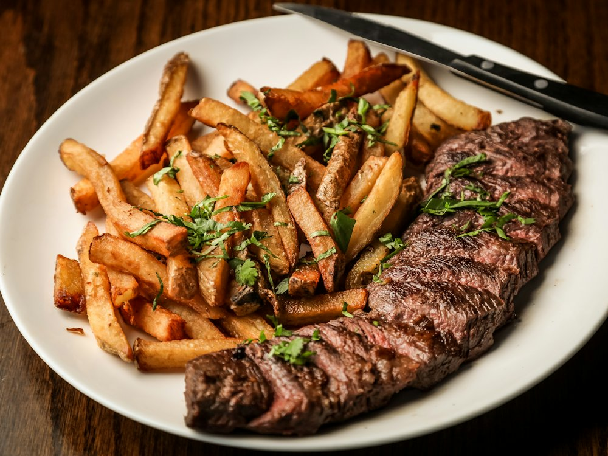

✦ Выбор OnlyGuests Рейтинг 4.9+ и больше 1000 оценок гостей в 2ГИС
Beefeater
Ресторан · Стейк-хаус · Алматы
Рейтинг 2ГИС
★ 4.9
1 056 оценок
Год открытия
2017
ориентировочно ноябрь 2017 г. (sxodim.com)
Средний чек
≈15 000 ₸
оценка по типу заведения
Адрес и часы
📍 БЦ D-43, пр. Достык, 43, Алматы · Медеуский район
🕒 часы работы уточняются — смотрите в 2ГИС
О заведении
Гастрономический мясной ресторан.
Меню
Рядом в справочнике
Barakat Burger · Basilic · Baursak City · BeerDay · Bella Ciao · Bereket